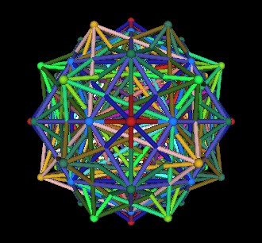
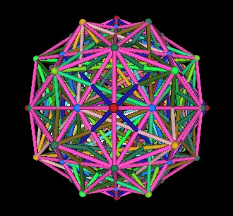

Suggests Spiral Motion
| Name | Vertices | Faces | Edges | V + F | E + 2 |
| Tetrahedron | 4 | 4 | 6 | 8 | 8 |
| Cube | 8 | 6 | 12 | 14 | 14 |
| Octahedron | 6 | 8 | 12 | 14 | 14 |
| Rhombic Dodecahedron | 14 | 12 | 24 | 26 | 26 |
| Icosahedron | 12 | 20 | 30 | 32 | 32 |
| Dodecahedron | 20 | 12 | 30 | 32 | 32 |
| Rhombic Triacontahedron | 32 | 30 | 60 | 62 | 62 |
| Name | Sum of Angles 1 Face |
Faces | Total Sum of Surface Angles |
Vertices | V*360° | V*360°-720° |
| Tetrahedron | 60°*3=180° | 4 | 720° | 4 | 1440° | 720° |
| Cube | 90°*4=360° | 6 | 2160° | 8 | 2880° | 2160° |
| Octahedron | 60°*3=180° | 8 | 1440° | 6 | 2160° | 1440° |
| Rhombic Dodecahedron | 360° | 12 | 4320° | 14 | 5040° | 4320° |
| Icosahedron | 60°*3=180° | 20 | 3600° | 12 | 4320° | 3600° |
| Dodecahedron | 108°*5=540° | 12 | 6480° | 20 | 7200° | 6480° |
| Rhombic Triacontahedron | 360° | 30 | 10800° | 32 | 11520° | 10800° |
| Name | Volume Equation |
| Tetrahedron | 1 (Edge Length)^3 |
| Cube | 3 (Face Diagonal)^3 |
| Octahedron | 4 (Edge Length)^3 |
| Rhombic Dodecahedron | 6 (Long Face Diagonal)^3 |
| Icosahedron | |
| Dodecahedron | |
| Rhombic Triacontahedron |
We have just seen how two intersection Tetrahedra define a cube.
|
|
| Two Tetrahedra Define a Cube |
| Intersecting Tetrahedra Define Octahedron |
| Intersecting Cube and Octahedron Define VE |
| 10 Tetrahedra In The Dodecahedron |
Each of the Dodecahedron's vertices is shared with 2 Tetrahedra. We can eliminate this redundancy by removing 5 Tetrahedra.
| 5 Tetrahedra In The Dodecahedron |
This suggests a spiral vortex motion in each of the Dodecahedron's faces.
|
|
| 5 Tetrahedra In The Dodecahedron Suggests Spiral Motion |
It is possible to position 5 Cubes within the Dodecahedron.
| 5 Cubes In The Dodecahedron |
The model of 5 Cubes in the Dodecahedron suggested to me that the cubes might be positioned within the Dodecahedron by rotations from a single cube position. This is indeed the case.
Consider a single cube. It has 4 Vertex to Vertex rotation axes.
| 4 Vertex to Vertex Rotation Axes |
If we assign a Cube to each of these axes, we have a total of 5 Cubes (original 1 plus 4). We then rotate the 4 Cubes about these 4 axes.

|
|
| Four Rotating Cubes, One Stationary |
5 Cubes in Dodecahedron |
We will now put all of the polyhedra together into a single polyhedron. The resulting polyhedron will have 120 triangular faces. It is called the 120 Polyhedron.
This polyhedron was originally described to me by Lynnclaire Dennis. For more information on Ms Dennis and her work, see the Pattern web site at http://www.pattern.org/.
Start with the Dodecahedron.
| Dodecahedron | |
Add in all 10 Tetrahedra.
| Dodecahedron, Tetrahedra | |
Add the 5 Cubes.
| Dodecahedron, Tetrahedra, Cubes | |
Add the duals to each of the 5 Cubes; 5 Octahedra.
| Dodecahedron, Tetrahedra, Cubes, Octahedra | |
Recall that each Cube/Octahedron pair defines a rhombic Dodecahedron.
| Dodecahedron, Tetrahedra, Cubes, Octahedra, rhombic Dodecahedra | |
Add the dual to the (regular) Dodecahedron; the Icosahedron.
| Dodecahedron, Tetrahedra, Cubes, Octahedra,
rhombic Dodecahedra, Icosahedron |
|
Recall that the Icosahedron/Dodecahedron pair defines the rhombic Triacontahedron.
|  | |
| Dodecahedron, Tetrahedra, Cubes, Octahedra,
rhombic Dodecahedra, Icosahedron, rhombic Triacontahedron |
|
Connect all the outer vertices together. This defines the 120 Polyhedron.
|  | |
| Dodecahedron, Tetrahedra, Cubes, Octahedra,
rhombic Dodecahedra, Icosahedron, rhombic Triacontahedron, 120 Polyhedron |
|
| 120 Polyhedron | |
(Note that there are other polyhedra with 120 triangular faces. They will not be discussed here.)